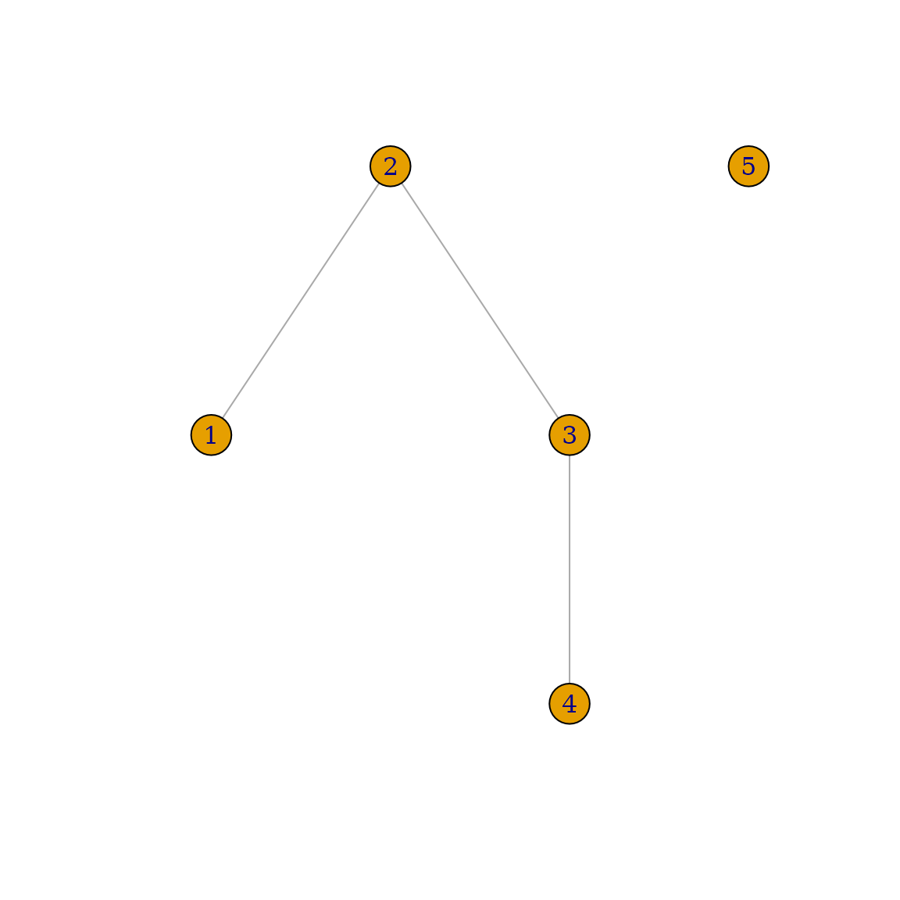

igraph es una biblioteca rápida y de código abierto para
el análisis de grafos o redes. El núcleo de ésta libreria se encuentra
escrito en C y contiene enlaces para lenguajes de alto nivel como R, Python, y Mathematica.
Esta viñeta pretende darte una visión general de las funciones
disponibles de igraph en R. Para obtener información
detallada de cada función, consulta https://r.igraph.org/reference/.
NOTA: A lo largo de este tutorial, utilizaremos las
palabras grafo y red como sinónimos, y también
vértice o nodo como sinónimos.
Instalación
Para instalar la librería desde CRAN, usa:
install.packages("igraph")Encontrarás más información sobre dependencias, requisitos y resolución de problemas sobre la instalación en la página principal.
Uso de igraph
Para utilizar igraph en tu código de R, primero debes
cargar la biblioteca:
##
## Attaching package: 'igraph'## The following objects are masked from 'package:stats':
##
## decompose, spectrum## The following object is masked from 'package:base':
##
## unionAhora tienes todas las funciones de igraph
disponibles.
Crear un grafo
igraph ofrece muchas formas de crear un grafo. La más
sencilla es con la función make_empty_graph:
g <- make_empty_graph()La forma más común de crear un grafo es con make_graph,
que construye un grafo basado en especificar las aristas. Por ejemplo,
Para hacer un grafo con 10 nodos (numerados 1 a
10) y dos aristas que conecten los nodos 1-2 y
1-5:
g <- make_graph(edges = c(1,2, 1,5), n=10, directed = FALSE)A partir de igraph 0.8.0, también puedes incluir literales mediante
la notación de fórmulas de igraph. En este caso, el primer término de la
fórmula tiene que empezar con un carácter “~”, como comúnmente se usa en
las fórmulas en R. Las expresiones constan de los nombres de los
vértices y los operadores de las aristas. El operador de un arista es
una secuencia de caracteres “-” y “+”, el primero es para indicar
propiamente las aristas y el segundo para las puntas de flecha
(dirección). Puedes utilizar tantos caracteres ‘-’ como quieras para
“dibujarlas”. Si todos los operadores de un arista están formados
únicamente por caracteres -, el grafo será no dirigido,
mientras que un único carácter + implica un grafo dirigido.
Por ejemplo, para crear el mismo grafo que antes:
g <- make_graph(~ 1--2, 1--5, 3, 4, 5, 6, 7, 8, 9, 10)Podemos imprimir el grafo para obtener un resumen de sus nodos y aristas:
g## IGRAPH 7a68d45 UN-- 10 2 --
## + attr: name (v/c)
## + edges from 7a68d45 (vertex names):
## [1] 1--2 1--5Esto significa: grafo no dirigido (Undirected) con 10 vértices y 2 aristas, que se enlistan en la última parte. Si el grafo tiene un atributo [nombre], también se imprime.
NOTA: summary no enlista las aristas,
lo cual es conveniente para grafos grandes con millones de aristas:
summary(g)## IGRAPH 7a68d45 UN-- 10 2 --
## + attr: name (v/c)También make_graph puede crear algunos grafos destacados
con sólo especificar su nombre. Por ejemplo, puedes generar el grafo que
muestra la red social del club de kárate de Zachary, que refleja la
amistad entre los 34 miembros del club de una universidad de los Estados
Unidos en la década de los 70s:
g <- make_graph('Zachary')Para observar un grafo puedes utilizar plot:
plot(g)Más adelante en este tutorial se ofrece una descripción detallada de las opciones para graficar un grafo.
IDs de vértices y aristas
Los vértices y las aristas tienen un identificador numérico en
igraph. Los ID de los vértices son siempre consecutivos y empiezan por
1. Para un grafo con “n” vértices, los ID de los vértices están siempre
entre 1 y “n”. Si alguna operación cambia el número de vértices en los
grafos, por ejemplo, se crea un subgrafo mediante
induced_subgraph, entonces los vértices se vuelven a
enumerar para satisfacer este criterio.
Lo mismo ocurre con las aristas: los ID de las aristas están siempre entre 1 y “m”, el número total de aristas del grafo.
NOTA: Si estás familiarizado con C o con la interfaz
Python de
igraph, te habrás dado cuenta de que en esos lenguajes los
IDs de vértices y aristas empiezan por 0. En la interfaz de R, ambos
empiezan por 1, para mantener la coherencia con la convención de cada
lenguaje.
Además de los IDs, a los vértices y aristas se les puede asignar un nombre y otros atributos. Esto facilita su seguimiento cada vez que se altera un grafo. Más adelante en este tutorial se muestran ejemplos de cómo alterar estas características.
Añadir y borrar vértices y aristas
Sigamos trabajando con el grafo del club de kárate. Para añadir uno o
más vértices a un grafo existente, utiliza
add_vertices:
g <- add_vertices(g, 3)Del mismo modo, para añadir aristas puedes utilizar
add_edges:
Las aristas se añaden especificando el ID del vértice origen y el
vértice destino de cada arista. Con las instrucciones anteriores se
añaden tres aristas, una que conecta los vértices 1 y
35, otra que conecta los vértices 1 y
36 y otra que conecta los vértices 34 y
37.
Además de las funciones add_vertices y
add_edges, se puede utilizar el operador “+” para añadir
vértices o aristas al grafo. La operación que se realice dependerá del
tipo de argumento del lado derecho:
Puedes añadir un solo vértice/arista a la vez usando
add_vertex y add_edge.
Advertencia: Si necesitas añadir múltiples aristas a
un grafo, es mucho más eficiente usar add_edges una vez que
utilizar repetidamente add_edge con una nueva arista a la
vez. Lo mismo ocurre al eliminar aristas y vértices.
Si intentas añadir aristas a vértices con IDs no válidos (por
ejemplo, intentas añadir una arista al vértice 38 cuando el
grafo sólo tiene 37 vértices), igraph muestra un error:
Añadamos más vértices y aristas a nuestro grafo. En
igraph podemos utilizar el paquete magrittr,
que proporciona un mecanismo para encadenar comandos con el operador
%\>%:
g <- g %>% add_edges(edges=c(1,34)) %>% add_vertices(3) %>%
add_edges(edges=c(38,39, 39,40, 40,38, 40,37))
g## IGRAPH d5333b6 U--- 40 86 -- Zachary
## + attr: name (g/c)
## + edges from d5333b6:
## [1] 1-- 2 1-- 3 1-- 4 1-- 5 1-- 6 1-- 7 1-- 8 1-- 9 1--11 1--12
## [11] 1--13 1--14 1--18 1--20 1--22 1--32 2-- 3 2-- 4 2-- 8 2--14
## [21] 2--18 2--20 2--22 2--31 3-- 4 3-- 8 3--28 3--29 3--33 3--10
## [31] 3-- 9 3--14 4-- 8 4--13 4--14 5-- 7 5--11 6-- 7 6--11 6--17
## [41] 7--17 9--31 9--33 9--34 10--34 14--34 15--33 15--34 16--33 16--34
## [51] 19--33 19--34 20--34 21--33 21--34 23--33 23--34 24--26 24--28 24--33
## [61] 24--34 24--30 25--26 25--28 25--32 26--32 27--30 27--34 28--34 29--32
## [71] 29--34 30--33 30--34 31--33 31--34 32--33 32--34 33--34 1--35 1--36
## + ... omitted several edgesAhora tenemos un grafo no dirigido con 40 vértices y 89 aristas. Los
IDs de los vértices y aristas son siempre contiguos, así que si
borras un vértice, todos los vértices subsecuentes se vuelven a
enumerar. Cuando se re-numera un vértice, las aristas
no se vuelven a enumerar, pero sí sus vértices origen y
destino. Puedes usar delete_vertices y
delete_edges para realizar estas operaciones. Por ejemplo,
para borrar la arista que conecta los vértices 1-34, obtén
su ID y luego bórrala:
get.edge.ids(g, c(1,34))## [1] 82
g <- delete_edges(g, 85)Por ejemplo, para crear un grafo con forma de anillo y para partirlo:
g <- make_ring(10) %>% delete_edges("10|1")
plot(g)
El ejemplo anterior muestra que también puedes referirte a las
aristas indicando los IDs de los vértices origen y destino, conectados
por el símbolo |. En el ejemplo, "10|1"
significa la arista que conecta el vértice 10 con el
vértice 1. Por supuesto, también puedes usar los IDs de las
aristas directamente, o recuperarlos con la función
get.edge.ids:
g <- make_ring(5)
g <- delete_edges(g, get.edge.ids(g, c(1,5, 4,5)))
plot(g)
Veamos otro ejemplo, hagamos un grafo cordal. Recuerda que un grafo
es cordal (o triangulado) si cada uno de sus ciclos de cuatro o más
nodos tienen una “cuerda”, que es una arista que une dos nodos que no
son adyacentes en el ciclo. En primer lugar, vamos a crear el grafo
inicial utilizando graph_from_literal:
g1 <- graph_from_literal(A-B:C:I, B-A:C:D, C-A:B:E:H, D-B:E:F,
E-C:D:F:H, F-D:E:G, G-F:H, H-C:E:G:I,
I-A:H)
plot(g1)
En este ejemplo, se ha utilizado el operador ‘:’ para definir
conjuntos de vértices. Si el operador de un arista conecta dos conjuntos
de vértices, entonces cada vértice del primer conjunto estará conectado
a cada vértice del segundo conjunto. A continuación utilizamos
is_chordal para evaluar si nuestro grafo es cordal y buscar
qué aristas faltan para rellenar el grafo:
is_chordal(g1, fillin=TRUE)## $chordal
## [1] FALSE
##
## $fillin
## [1] 2 6 8 7 5 7 2 7 6 1 7 1
##
## $newgraph
## NULLLuego, en una sola línea podemos añadir las aristas necesarias para que el grafo inicial sea cordal:
chordal_graph <- add_edges(g1, is_chordal(g1, fillin=TRUE)$fillin)
plot(chordal_graph)
Construcción de grafos
Además de make_empty_graph, make_graph y
make_graph_from_literal, igraph incluye muchas
otras funciones para construir un grafo. Algunas son
deterministas, es decir, producen el mismo grafo cada vez, por
ejemplo make_tree:
## IGRAPH ede11b7 U--- 5 3 -- Ring graph
## + attr: name (g/c), mutual (g/l), circular (g/l)Esto genera un grafo regular en forma de árbol con 127 vértices, cada
vértice con dos hijos. No importa cuántas veces llames a
make_tree, el grafo generado será siempre el mismo si
utilizas los mismos parámetros:
graph2 <- make_tree(127, 2, mode = "undirected")
identical_graphs(graph1,graph2)## [1] TRUEOtras funciones son estocásticas, lo cual quiere decir que
producen un grafo diferente cada vez; por ejemplo,
sample_grg:
graph1 <- sample_grg(100, 0.2)
summary(graph1)## IGRAPH 8d335a5 U--- 100 529 -- Geometric random graph
## + attr: name (g/c), radius (g/n), torus (g/l)Esto genera un grafo geométrico aleatorio: Se eligen n puntos de forma aleatoria y uniforme dentro del espacio métrico, y los pares de puntos más cercanos entre sí respecto a una distancia predeterminada d se conectan mediante una arista. Si se generan GRGs con los mismos parámetros, serán diferentes:
graph2 <- sample_grg(100, 0.2)
identical_graphs(graph1, graph2)## [1] FALSEUna forma un poco más relajada de comprobar si los grafos son
equivalentes es mediante isomorphic. Se dice que dos grafos
son isomorfos si tienen el mismo número de componentes (vértices y
aristas) y mantienen una correspondencia uno a uno entre vértices y
aristas, es decir, están conectados de la misma manera:
isomorphic(graph1, graph2)## [1] FALSEComprobar el isomorfismo puede llevar un tiempo en el caso de grafos
grandes (en este caso, la respuesta puede darse rápidamente comprobando
la secuencia de grados de los dos grafos). identical_graph
es un criterio más estricto que isomorphic: los dos grafos
deben tener la misma lista de vértices y aristas, exactamente en el
mismo orden, con la misma direccionalidad, y los dos grafos también
deben tener idénticos atributos de grafo, vértice y arista.
Establecer y recuperar atributos
Además de los IDs, los vértices y aristas pueden tener
atributos como un nombre, coordenadas para graficar, metadatos
y pesos. El propio grafo también puede tener estos atributos (por
ejemplo, un nombre, que se mostrará en summary). En cierto
sentido, cada grafo, vértice y arista puede ser utilizado como un
espacio de nombres en R para almacenar y recuperar estos atributos.
Para demostrar el uso de los atributos, creemos una red social sencilla:
g <- make_graph(~ Alice-Bob:Claire:Frank, Claire-Alice:Dennis:Frank:Esther,
George-Dennis:Frank, Dennis-Esther)Cada vértice representa a una persona, por lo que queremos almacenar
sus edades, géneros y el tipo de conexión entre dos personas
(is_formal se refiere a si una conexión entre una persona y
otra es formal o informal, es decir, colegas o amigos). El operador
\$ es un atajo para obtener y establecer atributos de un
grafo. Es más corto y tan legible como graph_attr y
set_graph_attr.
V(g)$age <- c(25, 31, 18, 23, 47, 22, 50)
V(g)$gender <- c("f", "m", "f", "m", "m", "f", "m")
E(g)$is_formal <- c(FALSE, FALSE, TRUE, TRUE, TRUE, FALSE, TRUE, FALSE, FALSE)
summary(g)## IGRAPH d2077e4 UN-- 7 9 --
## + attr: name (v/c), age (v/n), gender (v/c), is_formal (e/l)V y E son la forma estándar de obtener una
secuencia de todos los vértices y aristas respectivamente. Esto asigna
un atributo a todos los vértices/aristas a la vez. Otra forma
de generar nuestra red social es con el uso de
set_vertex_attr y set_edge_attr y el operador
%\>%:
g <- make_graph(~ Alice-Bob:Claire:Frank, Claire-Alice:Dennis:Frank:Esther,
George-Dennis:Frank, Dennis-Esther) %>%
set_vertex_attr("age", value = c(25, 31, 18, 23, 47, 22, 50)) %>%
set_vertex_attr("gender", value = c("f", "m", "f", "m", "m", "f", "m")) %>%
set_edge_attr("is_formal", value = c(FALSE, FALSE, TRUE, TRUE, TRUE, FALSE, TRUE, FALSE, FALSE))
summary(g)Para asignar o modificar un atributo a un único vértice/arista:
E(g)$is_formal## [1] FALSE FALSE TRUE TRUE TRUE FALSE TRUE FALSE FALSE## [1] TRUE FALSE TRUE TRUE TRUE FALSE TRUE FALSE FALSELos valores de los atributos pueden establecerse en cualquier objeto de R, pero ten en cuenta que almacenar el grafo en algunos formatos puede provocar la pérdida de valores en atributos complejos. Los vértices, las aristas y el propio grafo pueden utilizarse para establecer atributos, por ejemplo, para añadir una fecha al grafo:
g$date <- c("2022-02-11")
graph_attr(g, "date")## [1] "2022-02-11"Para recuperar atributos, también puedes utilizar
graph_attr, vertex_attr y
edge_attr. Para encontrar el ID de un vértice puedes
utilizar la función match:
## [1] 7Para asignar atributos a un subconjunto de vértices o aristas, puedes utilizar:
## + 7/7 vertices, named, from d2077e4:
## [1] Alejandra Bruno Carmina Frank Dennis Esther GeorgePara eliminar atributos:
g <- delete_vertex_attr(g, "gender")
V(g)$gender## NULLSi quieres guardar un grafo en R con todos los atributos utiliza la
función estándar de R dput y recupéralo más tarde con
dget. También puedes simplemente guardar el espacio de
trabajo de R y restaurarlo más tarde.
Propiedades estructurales de los grafos
igraph proporciona un amplio conjunto de métodos para calcular varias propiedades estructurales de los grafos. Está más allá del alcance de este tutorial documentar todos ellos, por lo que esta sección sólo presentará algunos de ellos con fines ilustrativos. Trabajaremos con la pequeña red social que construimos en la sección anterior.
Probablemente, la propiedad más sencilla en la que se puede pensar es
el “grado del vértice”. El grado de un vértice es igual al número de
aristas incidentes a él. En el caso de los grafos dirigidos, también
podemos definir el grado de entrada (el número de aristas
que apuntan hacia el vértice) y el grado de salida (el
número de aristas que se originan en el vértice). igraph es capaz de
calcularlos todos utilizando una sintaxis sencilla:
degree(g)## Alejandra Bruno Carmina Frank Dennis Esther George
## 3 1 4 3 3 2 2Si el grafo fuera dirigido, podríamos calcular los grados de entrada
y salida por separado utilizando degree(mode="in") y
degree(mode="out"). También puedes pasar un único ID de un
vértice o una lista de IDs de los vértices a degree si
quieres calcular los grados sólo para un subconjunto de vértices:
degree(g, 7)## George
## 2## Carmina Frank Dennis
## 4 3 3La mayoría de las funciones que aceptan los IDs de los vértices
también aceptan los “nombres” de los vértices (es decir, los valores del
atributo name del vértice) siempre que los nombres sean
únicos:
## Carmina Frank Dennis
## 4 3 3También funciona para vértices individuales:
degree(g, "Bruno")## Bruno
## 1De igual manera, se utiliza una sintaxis similar para la mayoría de las propiedades estructurales que igraph puede calcular. Para las propiedades de los vértices, las funciones aceptan un ID, un nombre o una lista de IDs o nombres (y si se omiten, el valor predeterminado es el conjunto de todos los vértices). Para las propiedades de aristas, las funciones aceptan un único ID o una lista de IDs.
NOTA: Para algunas mediciones, no tiene sentido
calcularlas sólo para unos pocos vértices o aristas en lugar de para
todo el grafo, ya que de todas formas llevaría el mismo tiempo. En este
caso, las funciones no aceptan IDs de vértices o aristas, pero se puede
restringir la lista resultante utilizando operaciones estándar. Un
ejemplo es la centralidad de vectores propios
(evcent()).
Además del grado, igraph incluye funciones integradas para calcular
muchas otras propiedades de centralidad, como la intermediación de
vértices y aristas (edge_betweenness) o el PageRank de
Google (page_rank), por nombrar algunas. Aquí sólo
ilustraremos la intermediación de aristas:
## [1] 6 6 4 3 4 4 4 2 3De este modo, ahora también podemos averiguar qué conexiones tienen la mayor centralidad de intermediación:
ebs <- edge_betweenness(g)
as_edgelist(g)[ebs == max(ebs), ]## [,1] [,2]
## [1,] "Alejandra" "Bruno"
## [2,] "Alejandra" "Carmina"Búsqueda de vértices y aristas basada en atributos
Selección de vértices
Tomando como ejemplo la red social anteriormente creada, te gustaría
averiguar quién tiene el mayor grado. Puedes hacerlo con las
herramientas presentadas hasta ahora y con la función
which.max:
## Carmina
## 3Otro ejemplo sería seleccionar sólo los vértices que tienen IDs
impares, utilizando la función V:
graph <- graph.full(n=10)
only_odd_vertices <- which(V(graph)%%2==1)
length(only_odd_vertices)## [1] 5Por supuesto, es posible seleccionar vértices o aristas mediante índices posicionales:
seq <- V(graph)[2, 3, 7]
seq## + 3/10 vertices, from 8cf75ea:
## [1] 2 3 7
seq <- seq[1, 3] # filtrar un conjunto de vértices existente
seq## + 2/10 vertices, from 8cf75ea:
## [1] 2 7Al seleccionar un vértice que no existe se produce un error:
seq <- V(graph)[2, 3, 7, "foo", 3.5]
## Error in simple_vs_index(x, ii, na_ok) : Unknown vertex selectedLos nombres de los atributos también pueden utilizarse tal cual
dentro de los operadores de indexación (“[]”) de V() y
E(). Esto puede combinarse con la capacidad de R de
utilizar vectores booleanos para indexar y obtener expresiones muy
concisas y legibles para recuperar un subconjunto del set de vértices o
aristas de un grafo. Por ejemplo, el siguiente comando nos da los
nombres de los individuos menores de 30 años de nuestra red social:
V(g)[age < 30]$name## [1] "Alejandra" "Carmina" "Frank" "Esther"Por supuesto, < no es el único operador booleano que
puede utilizarse para esto. Otras posibilidades son las siguientes:
| Operador | Significado |
|---|---|
== |
El valor del atributo/propiedad debe ser igual a |
!= |
El valor del atributo/propiedad debe no ser igual a |
< |
El valor del atributo/propiedad debe ser menos que |
<= |
El valor del atributo/propiedad debe ser inferior o igual a |
> |
El valor del atributo/propiedad debe ser mayor que |
>= |
El valor del atributo/propiedad debe ser mayor o igual a |
%in% |
El valor del atributo/propiedad debe estar incluido en |
También puede crear un operador “no incluido en” a partir de
%in% utilizando el operador Negate:
`%notin%` <- Negate(`%in%`)Si un atributo tiene el mismo nombre que una función de igraph, debes
tener cuidado ya que la sintaxis puede llegar a ser un poco confusa. Por
ejemplo, si hay un atributo llamado degree que representa
las notas de un examen para cada persona, no debe confundirse con la
función de igraph que calcula los grados de los vértices de una red:
## [1] "A" "A+" "C"## [1] "Alejandra" "Frank" "Dennis"Selección de aristas
Las aristas pueden seleccionarse basándose en atributos, igual que
los vértices. Como ya se ha mencionado, la forma estándar de obtener
aristas es E. Además, existen algunas propiedades
estructurales especiales para seleccionar aristas.
El uso de .from permite filtrar la serie de aristas
desde los vértices de donde proceden. Por ejemplo, para seleccionar
todas las aristas procedentes de Carmina (cuyo ID de vértice es el
3):
E(g)[.from(3)]## + 4/9 edges from d2077e4 (vertex names):
## [1] Alejandra--Carmina Carmina --Frank Carmina --Dennis Carmina --EstherPor supuesto, también funciona con nombres de vértices:
E(g)[.from("Carmina")]## + 4/9 edges from d2077e4 (vertex names):
## [1] Alejandra--Carmina Carmina --Frank Carmina --Dennis Carmina --EstherAl usar .to, se filtran la serie de aristas en función
de los vértices de destino o diana. Esto es diferente de
.from si el grafo es dirigido, mientras que da la misma
respuesta para grafos no dirigidos. Con .inc sólo se
seleccionan las aristas que inciden en un único vértice o en al menos
uno de los vértices, independientemente de la dirección de las
aristas.
La expresión %--% es un operador especial que puede
utilizarse para seleccionar todas las aristas entre dos conjuntos de
vértices. Ignora las direcciones de las aristas en los grafos dirigidos.
Por ejemplo, la siguiente expresión selecciona todas las aristas entre
Carmina (su ID de vértice es el 3), Dennis (su ID de vértice es el 5) y
Esther (su ID de vértice es el 6):
## + 3/9 edges from d2077e4 (vertex names):
## [1] Carmina--Dennis Carmina--Esther Dennis --EstherPara que el operador %--% funcione con nombres, puedes
construir vectores de caracteres que contengan los nombres y luego
utilizar estos vectores como operandos. Por ejemplo, para seleccionar
todas las aristas que conectan a los hombres con las mujeres, podemos
hacer lo siguiente, luego de volver a añadir el atributo de género que
hemos eliminado anteriormente:
men <- V(g)[gender == "m"]$name
men## [1] "Bruno" "Frank" "Dennis" "George"
women <- V(g)[gender == "f"]$name
women## [1] "Alejandra" "Carmina" "Esther"## + 5/9 edges from d2077e4 (vertex names):
## [1] Alejandra--Bruno Alejandra--Frank Carmina --Frank Carmina --Dennis
## [5] Dennis --EstherTratar un grafo como una matriz de adyacencia
Una matriz de adyacencia es otra manera de representar un grafo. En la matriz de adyacencia, las filas y columnas están indicadas por los vértices del grafo y los elementos de la matriz indican el número de aristas entre los vértices i y j. La matriz de adyacencia del grafo de nuestra red social imaginaria es:
## Warning: `get.adjacency()` was deprecated in igraph 2.0.0.
## ℹ Please use `as_adjacency_matrix()` instead.
## This warning is displayed once every 8 hours.
## Call `lifecycle::last_lifecycle_warnings()` to see where this warning was
## generated.## Warning in as_adjacency_matrix(graph = graph, type = type, attr = attr, : The
## `edges` argument of `as_adjacency_matrix` is deprecated; it will be removed in
## igraph 1.4.0## 7 x 7 sparse Matrix of class "dgCMatrix"
## Alejandra Bruno Carmina Frank Dennis Esther George
## Alejandra . 1 1 1 . . .
## Bruno 1 . . . . . .
## Carmina 1 . . 1 1 1 .
## Frank 1 . 1 . . . 1
## Dennis . . 1 . . 1 1
## Esther . . 1 . 1 . .
## George . . . 1 1 . .Por ejemplo, Carmina (1, 0, 0, 1, 1, 1, 0) está
directamente conectada con Alejandra (que tiene el índice 1), Frank
(índice 4), Dennis (índice 5), Esther (índice 6) y , pero no con Bruno
(índice 2) ni con George (índice 7).
Diseños y graficación
Un grafo es un objeto matemático abstracto sin una representación específica en el espacio 2D, 3D o cualquier espacio geométrico. Esto significa que, cuando queremos visualizar un grafo, primero tenemos que encontrar una correspondencia entre los vértices y las coordenadas en un espacio bidimensional o tridimensional, preferiblemente de una manera útil y/o agradable a la vista. Una rama separada de la teoría de grafos, denominada dibujo de grafos, trata de resolver este problema mediante varios algoritmos de diseño de grafos. igraph implementa varios algoritmos de diseño y también es capaz de dibujarlos en la pantalla o en cualquier formato de salida que soporte el propio R.
Algoritmos de diseño
Las funciones de diseño en igraph siempre empiezan por
layout. La siguiente tabla las resume:
| Nombre del método | Descripción del algoritmo |
|---|---|
layout_randomly |
Coloca los vértices de forma totalmente aleatoria |
layout_in_circle |
Disposición determinista que coloca los vértices en un círculo |
layout_on_sphere |
Disposición determinista que coloca los vértices de manera uniforme en la superficie de una esfera |
layout_with_drl |
El algoritmo DRL (Distributed Recursive Layout) para grafos grandes |
layout_with_fr |
El algoritmo dirigido Fruchterman-Reingold |
layout_with_kk |
El algoritmo dirigido Kamada-Kawai |
layout_with_lgl |
El algoritmo LGL (Large Graph Layout) para grafos grandes |
layout_as_tree |
Diseño de árbol de Reingold-Tilford, útil para grafos (casi) arbóreos |
layout_nicely |
Algoritmo de diseño que elige automáticamente uno de los otros algoritmos en función de determinadas propiedades del grafo |
Los algoritmos de diseño pueden ejecutarse directamente con un grafo como primer argumento. Devolverán una matriz con dos columnas y tantas filas como número de vértices del grafo; cada fila corresponderá a la posición de un único vértice, ordenado según el ID del vértice. Algunos algoritmos tienen una variante 3D; en este caso devuelven tres columnas en lugar de 2.
layout <- layout_with_kk(g)Algunos algoritmos de diseño toman argumentos adicionales; por ejemplo, cuando se diseña un grafo con la forma de un árbol, puede tener sentido especificar qué vértice debe colocarse en la raíz del diseño:
layout <- layout_as_tree(g, root = 2)Dibujar un grafo utilizando un diseño
Podemos trazar nuestra red social imaginaria con el algoritmo de diseño Kamada-Kawai de la siguiente manera:
layout <- layout_with_kk(g)
plot(g, layout = layout, main = "Red social con el algoritmo de diseño Kamada-Kawai")
Esto debería abrir una nueva ventana mostrando una representación visual de la red. Recuerda que la ubicación exacta de los nodos puede ser diferente en tu máquina, ya que la disposición no es determinista.
El argumento layout también acepta funciones; en este
caso, la función será llamada con el grafo como su primer argumento.
Esto permite ingresar directamente el nombre de una función de diseño,
sin tener que crear una variable de diseño, como en el ejemplo
anterior:
plot(g, layout = layout_with_fr,
main = "Red social con el algoritmo de disposición Fruchterman-Reingold")
Para mejorar el aspecto visual, una adición trivial sería colorear los vértices según el género. También deberíamos intentar colocar los nombres ligeramente fuera de los vértices para mejorar la legibilidad:
V(g)$color <- ifelse(V(g)$gender == "m", "yellow", "red")
plot(g, layout = layout, vertex.label.dist = 3.5,
main = "Red social - con los géneros como colores")
También puedes tratar el atributo gender como un factor
y proporcionar los colores como un argumento a plot(), que
tiene prioridad sobre el atributo color que se asigna de
manera estándar a los vértices. Los colores se asignan
automáticamente:

Como se vio anteriormente, con el argumento vertex.color
puedes especificar propiedades visuales para plot en lugar
de usar y/o manipular los atributos de vértices o aristas. El siguiente
gráfico muestra las relaciones formales con líneas gruesas y las
informales con líneas finas:
plot(g, layout=layout, vertex.label.dist=3.5, vertex.size=20,
vertex.color=ifelse(V(g)$gender == "m", "yellow", "red"),
edge.width=ifelse(E(g)$is_formal, 5, 1))
Este último procedimiento es preferible si quieres modificar la representación visual de tu grafo, pero no quieres hacer modificaciones al grafo mismo.
En resumen, hay propiedades especiales de vértices y aristas que corresponden a la representación visual del grafo. Estos atributos pueden modificar la configuración predeterminada de igraph (es decir, color, peso, nombre, forma, diseño, etc.). Las dos tablas siguientes resumen los atributos visuales más utilizados para vértices y aristas, respectivamente:
Atributos de los vértices para graficar
| Nombre del atributo | Argumento | Propósito |
|---|---|---|
color |
vertex.color |
Color del vértice |
label |
vertex.label |
Etiqueta del vértice. Se convertirán en caracteres. Especifique NA para omitir las etiquetas de los vértices. Las etiquetas de vértices por defecto son los IDs de los vértices. |
label.cex |
vertex.label.cex |
Tamaño de fuente de la etiqueta del vértice, interpretado como un
factor multiplicativo, de forma similar a la función text
de R |
label.color |
vertex.label.color |
Color de la etiqueta del vértice |
label.degree |
vertex.label.degree |
Define la posición de las etiquetas de los vértices, en relación con el centro de los mismos. Se interpreta como un ángulo en radianes, cero significa ‘a la derecha’, y ‘pi’ significa a la izquierda, arriba es -pi/2 y abajo es pi/2. El valor por defecto es -pi/4 |
label.dist |
vertex.label.dist |
Distancia de la etiqueta del vértice desde el propio vértice, en relación con el tamaño del vértice |
label.family |
vertex.label.family |
Familia tipográfica del vértice, de forma similar a la función
text de R |
label.font |
vertex.label.font |
Fuente dentro de la familia de fuentes del vértice, de forma similar
a la función text de R |
shape |
vertex.shape |
La forma del vértice, actualmente “circle”, “square”, “csquare”,
“rectangle”, “crectangle”, “vrectangle”, “pie” (consultar
vertex.shape.pie), ‘sphere’ y “none” son admitidos, y sólo
por el comando plot.igraph
|
size |
vertex.size |
El tamaño del vértice, un escalar numérico o vector, en este último caso el tamaño de cada vértice puede ser diferente |
Atributos de las aristas para graficar
| Nombre del atributo | Argumento | Propósito |
|---|---|---|
color |
edge.color |
Color de la arista |
curved |
edge.curved |
Un valor numérico especifica la curvatura de la arista; una curvatura cero significa aristas rectas, valores negativos significan que la arista se curva en el sentido de las agujas del reloj, valores positivos lo contrario. TRUE significa curvatura 0.5, FALSE significa curvatura cero |
arrow.size |
edge.arrow.size |
Actualmente es una constante, por lo que es la misma para todas las aristas. Si se presenta un vector, sólo se utiliza el primer elemento, es decir, si se toma de un atributo de aristas, sólo se utiliza el atributo de la primera arista para todas las flechas |
arrow.width |
edge.arrow.width |
El ancho de las flechas. Actualmente es una constante, por lo que es la misma para todas las aristas |
width |
edge.width |
Anchura del borde en píxeles |
label |
edge.label |
Si se especifica, añade una etiqueta al borde |
label.cex |
edge.label.cex |
Tamaño de fuente de la etiqueta de la arista, interpretado como un
factor multiplicativo, de forma similar a la función text
de R |
label.color |
edge.label.color |
Color de la etiqueta de la arista |
label.family |
edge.label.family |
Familia tipográfica de la arista, de forma similar a la función
text de R |
label.font |
edge.label.font |
Fuente dentro de la familia de fuentes de la arista, de forma
similar a la función text de R |
Argumentos más comunes de plot()
Estos parámetros pueden especificarse como argumentos de la función
plot para ajustar el aspecto general del gráfico.
| Argumento | Propósito |
|---|---|
layout |
El diseño que se va a utilizar. Puede ser una instancia de
layout, una lista de tuplas que contengan coordenadas X-Y,
o el nombre de un algoritmo de diseño. El valor por defecto es
auto, que selecciona un algoritmo de diseño automáticamente
basado en el tamaño y la conectividad del grafo. |
margin |
La cantidad de espacio vacío debajo, encima, a la izquierda y a la derecha del gráfico, es un vector numérico de longitud cuatro |
igraph y el mundo exterior
Ningún módulo de grafos estaría completo sin algún tipo de
funcionalidad de importación/exportación que permita al paquete
comunicarse con programas y kits de herramientas externos. igraph no es
una excepción: proporciona funciones para leer los formatos de grafos
más comunes y para guardar grafos en archivos que obedezcan estas
especificaciones de formato. Las funciones principales para leer y
escribir de/a un fichero son read_graph y
write_graph, respectivamente. La siguiente tabla resume los
formatos que igraph puede leer o escribir:
| Formato | Nombre corto | Método de lectura | Método de escritura |
|---|---|---|---|
| Lista de adyacencia (a.k.a. LGL) | lgl |
read_graph(file, format = c("lgl")) |
write_graph(graph, file, format = c("lgl")) |
| Matriz de adyacencia | adjacency |
graph_from_adjacency_matrix(adjmatrix, mode = c("directed", "undirected", "max", "min", "upper","lower", "plus"), weighted = NULL, diag = TRUE, add.colnames = NULL, add.rownames = NA) |
as.matrix(graph, "adjacency") |
| DIMACS | dimacs |
read_graph(file, format = c("dimacs")) |
write_graph(graph, file, format = c("dimacs")) |
| Edge list | edgelist |
read_graph(file, format = c("edgelist")) |
write_graph(graph, file, format = c("edgelist")) |
| GraphViz | dot |
not supported yet | write_graph(graph, file, formati = c("dot")) |
| GML | gml |
read_graph(file, format = c("gml")) |
write_graph(graph, file, format = c("gml")) |
| GraphML | graphml |
read_graph(file, format = c("graphml")) |
write_graph(graph, file, format = c("graphml")) |
| LEDA | leda |
not supported yet | write_graph(graph, file, format = c("leda")) |
| Labeled edgelist (a.k.a. NCOL) | ncol |
read_graph(file, format = c("ncol")) |
write_graph(graph, file, format = c("ncol")) |
| Pajek format | pajek |
read_graph(file, format = c("pajek")) |
write_graph(graph, file, format = c("pajek")) |
NOTA: La mayoría de los formatos tienen sus propias limitaciones; por ejemplo, no todos pueden almacenar atributos. Tu mejor opción es probablemente GraphML o GML si quieres guardar los grafos de igraph en un formato que pueda ser leído desde un paquete externo y quieres preservar los atributos numéricos y de cadena. Edge list y NCOL también están bien si no tienes atributos (aunque NCOL admite nombres de vértices y pesos de aristas).
Dónde ir a continuación
Este tutorial es una breve introducción a igraph en R.
Esperamos que hayas disfrutado de su lectura y que te resulte útil para
tus propios análisis de redes.
Para una descripción detallada de funciones específicas, consulta https://r.igraph.org/reference/. Si tienes preguntas
sobre cómo utilizar igraph, visita nuestro Foro. Para informar de un
error, abre una incidencia en
Github. Por favor, no hagas preguntas de uso en Github directamente,
ya que está pensado para desarrolladores y no para usuarios.
Información de la sesión
En favor de la reproducibilidad, la información de la sesión para el código anterior es la siguiente:
## R version 4.3.2 (2023-10-31)
## Platform: x86_64-pc-linux-gnu (64-bit)
## Running under: Ubuntu 22.04.3 LTS
##
## Matrix products: default
## BLAS: /usr/lib/x86_64-linux-gnu/openblas-pthread/libblas.so.3
## LAPACK: /usr/lib/x86_64-linux-gnu/openblas-pthread/libopenblasp-r0.3.20.so; LAPACK version 3.10.0
##
## locale:
## [1] LC_CTYPE=C.UTF-8 LC_NUMERIC=C LC_TIME=C.UTF-8
## [4] LC_COLLATE=C.UTF-8 LC_MONETARY=C.UTF-8 LC_MESSAGES=C.UTF-8
## [7] LC_PAPER=C.UTF-8 LC_NAME=C LC_ADDRESS=C
## [10] LC_TELEPHONE=C LC_MEASUREMENT=C.UTF-8 LC_IDENTIFICATION=C
##
## time zone: UTC
## tzcode source: system (glibc)
##
## attached base packages:
## [1] stats graphics grDevices utils datasets methods base
##
## other attached packages:
## [1] igraph_1.6.0.9016
##
## loaded via a namespace (and not attached):
## [1] crayon_1.5.2 vctrs_0.6.5 cli_3.6.2 knitr_1.45
## [5] rlang_1.1.2 xfun_0.41 highr_0.10 stringi_1.8.3
## [9] purrr_1.0.2 textshaping_0.3.7 jsonlite_1.8.8 glue_1.6.2
## [13] htmltools_0.5.7 ragg_1.2.7 sass_0.4.8 fansi_1.0.6
## [17] rmarkdown_2.25 grid_4.3.2 evaluate_0.23 jquerylib_0.1.4
## [21] fastmap_1.1.1 yaml_2.3.8 lifecycle_1.0.4 memoise_2.0.1
## [25] stringr_1.5.1 compiler_4.3.2 fs_1.6.3 pkgconfig_2.0.3
## [29] lattice_0.21-9 systemfonts_1.0.5 digest_0.6.33 R6_2.5.1
## [33] utf8_1.2.4 pillar_1.9.0 magrittr_2.0.3 Matrix_1.6-1.1
## [37] bslib_0.6.1 tools_4.3.2 pkgdown_2.0.7 cachem_1.0.8
## [41] desc_1.4.3